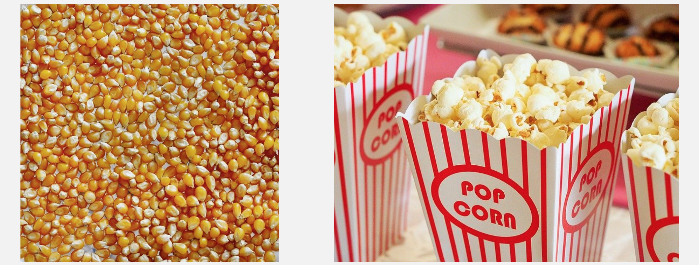

A better understanding of pH starts with the behavior of water molecules.
Each is made of two hydrogen atoms bound to one oxygen atom and is symbolized by the familiar formula H2O.
The following discussion deals with pure water -- no dissolved solids, no dissolved gasses, no fish, no shrimp, no plants...only H2O, the
foundation of water-quality management. (Salinity effects are mentioned in a few places below, but that topic and the others are taken up in other sections.)
Becoming familiar with this material will give you a much better understanding of important features of pH discussed in the next section
-- such as how small pH changes represent large changes in acidity, the proper way to average pH values, and which pH scales must
be applied when working with seawater.
This document was developed withIdyll[1], a “toolkit for creating data-driven stories
and explorable explanations”. Custom components were built withReactandD3.
Charged chemical species -- like H3O+ and OH- -- are ions. Ions with a positive charge are cations;
those with a negative charge are anions.
Two water molecules react to yield one H3O+ and one OH-:
H2O+H2O⇆H3O++OH−
H3O+ is a hydronium ion (also called a hydroxonium or oxonium ion). OH- is a hydroxide ion.
The hydrogen atom, H, has one proton and one electron. After the negatively charged electron has been stripped
off, all that remains is the positively charged proton.
For our purposes, no important details are lost by representing...
...H3O+ as H+ (a hydron or, more commonly, a proton)
...self-dissociation of one H2O molecule instead of the reaction of two
That simplifies the reaction to
H2O⇆H++OH−
[FYI, this is only for notational convenience: No bare protons are swimming around in solution. For that matter, even single hydronium ions quickly react
with others to form hydrate complexes.]
The double arrows (⇆) indicate that the reaction is reversible: water molecules dissociate to
produce ions and ions combine to form water molecules.
When temperature is constant, the reaction reaches a dynamic equilibrium:
dynamic (as opposed to static), because the reaction doesn’t stop -- water molecules still break up, driving the reaction to the right
while ions still combine, driving the reaction to the left
equilibrium (or steady state), because the reaction rates are constant -- and that means that the concentration of each component is constant
Before defining pH, we need a short detour to equilibrium constants.
An equilibrium constant is the ratio of the products of a chemical reaction to the reactantsafter the reaction has reached dynamic equilibrium.
In the general case, if reactants A and B combine to produce C and D
A+B⇆C+D
then the equilibrium constant K is
K=reactantsproducts={A}{B}{C}{D}
In our case, the reaction is
H2O⇆H++OH−
so Kw, the equilibrium constant of water (or its dissociation constant)
is the ratio of the ions produced, H+ and OH-, to the sole reactant, H2O
Kw={H2O}{H+}{OH−}
The braces ({}) are one way to represent activity or effective concentration.
The difference between activity and concentration is explained enough for our purposes in the panel below.
In chemistry, activity is not the same as concentration. Two simplifications will take us quickly from generally unfamiliar activity to familiar concentration.
First, the activity of water is given as 1.0, so we can simplify the formula to
Kw={H2O}{H+}{OH−}=1{H+}{OH−}={H+}{OH−}
Next, the difference between activity and concentration generally is small enough in dilute solutions -- those in which we’re interested -- so that we
can use concentration without introducing unacceptable error. This leads to
Kw={H+}{OH−}≈[H+][OH−]
The “wavy equals sign”, ≈, means “approximately equals”.
A popcorn analogy

A new bag of microwave popcorn might contain 750 un-popped kernels.
Heat that bag in the microwave and, in the ideal case, all 750 kernels will pop. If they do, then we can say that the concentration of popcorn is 750/bag.
But in the real world, maybe only 700 pop. If so, then the effective concentration of popcorn is lower: only 700/bag.
Chemistry makes a similar distinction for dissolved substances.
We’re all familiar with concentration: Measure a quantity of a substance (maybe 5.0 g), dissolve it in a volume of a solvent (e.g., 2 L of water),
and then divide the added amount by the volume -- 5.0 g divided by 2L, or 2.5 g/L.
That’s such a simple, straighforward procedure that it’s natural to wonder why we’d need any other concept.
The key is that concentration, as the term is used in Chemistry, doesn’t account for interactions that the substance has with the solvent (water, in our
case) and any other dissolved solids in the solution.
Concentration thus represents the ideal case -- like expecting all the popcorn to pop.
Activity in the chemical sense
Activity -- or effective concentration -- does take those interactions into account. It thus represents the more complicated non-ideal case that
describes how dissolved substances really behave in solution.
The interactions in question commonly involve ion-ion pairing: i.e., a certain fraction of the ions from the dissolved substance react with other ions in
the solution instead of remaining free (as we expect in the ideal case). This makes it appear that the solution is less concentrated than expected based on
the amount of substance added.
Using the example above, imagine that 8% of the dissolved ions from the added 2.5 g/L interact in some way with other ions already
in solution. That 8% then is the popcorn that didn’t pop.
The rest of the added substance -- 92% of 2.5, or 2.3 g/L -- is the effective concentration or activity. That lesser amount is the popcorn that did pop.
The bottomline
Just like the real number of popped kernels is less than the total number of kernels added to the bag, so the activity of a dissolved substance is less than the amount of substance added to the solution.
Concentration is close enough to activity in dilute solutions of the type we run in aquaculture, aquaponics, pool, hydroponics, and aquarium work that we generally
can use concentration without unacceptable loss of accuracy or precision.
We still need to be aware that the chemical properties of real solutions are better described by activity than by concentration, and that activity is...
...more important in concentrated solutions
...more important in solutions with high ionic strength (like seawater)
...essential for any precise chemical work
We’ll mention activity again shortly when we define pH because pH strictly is defined in terms of activity, not concentration; and we go into a bit more detail
farther along when we discuss pH scales and measuring pH in seawater.
[FYI, a similar distinction is made with gasses: partial pressure represents the ideal case; fugacity (effective partial pressure),
the non-ideal case. For our purposes, we’re usually good-to-go using partial pressure.]
Kw also is called the ion product of water in some tech literature.
After those simplifications, the dissociation constant of water is
Kw=[H+][OH−]
The brackets ([]) denote concentration in moles per kg of water (mol/kg or m, termed molality) or moles per liter of water
(mol/L or M, called molarity).
[FYI, oceanographers simplify certain analyses by using per kg instead of per liter because a mass of water (in kg) doesn’t change with
temperature or pressure while its volume (e.g. in liters) does.]
It’s important to be comfortable with the concept of moles because you’ll encounter it very frequently in water quality work.
As explained in the following panel, a mole is a measure of abundance; it’s the number of “things” in a collection. Just like one dozen refers to a collection of 12 things, one mole refers to a collection of a very, very, very large number of things.
Chemical reactions describe how substances interact in terms of their numbers.
For example, one molecule of sodium carbonate dissolved in water produces two sodium ions and one carbonate ion:
Na2CO3⇆2Na++CO3−2
Similarly, one molecule of H2O produces one H+ and one OH-:
H2O⇆H++OH−
And five dozen H2O molecules produce five dozen H+ and five dozen OH-.
But molecules and ions are so physically small that such small quantities aren’t practical in water-quality management.
To adjust pH in a pool or alkalinity in a hydroponics tank, we need to work with much larger amounts.
A mole is such an amount.
6.02214076 x 1023...things
A pair is a collection of two; a dozen, 12; the archaic score (”...four score and seven years ago...”), 20; a ream (of paper), 500. A mole is also a
collection -- a collection of...
602,214,076,000,000,000,000,000
In words:
six hundred two sextillion, two hundred fourteen quintillion, seventy-six quadrillion
And written compactly in scientific notation:
6.02214076 x 1023
How big is really big?
A mole is too big of a number to grasp; it’s just well outside the realm of our experience. Intro Chem classes approach this matter in fanciful ways.
one mole of donuts would cover the Earth to a depth of about 8 km (5 miles)
a human contains an average of ~3.72 x 1013 cells [2], and with 7,800,000,000 (7.8 billion, 2020) people on Earth, that’s less than 1/2 mole of human cells
if one mole of dollars were divided equally among each of the 7.8 billion people of Earth, and if a person counted their bills at the rate of one per second, it would take almost 2.5 million years to complete the task
Just too big to grasp.
The standard unit of abundance
The mole (mol) is one of the seven fundamental units in the International System of Units (Système international d’unités or SI).
It previously was defined as the number of atoms in 0.012 kg of carbon-12 (Avogadro’s Number, named for the early 19th
century Italian scientist Amedeo Avogadro).
But the kilogram was re-defined and so was the number of items in a mole.
On 20 May 2019, one mole was defined officially as the amount of a substance with exactly 6.02214076 × 1023 things
-- compounds, molecules, ions, donuts...
[FYI, 23 October, between 6:02 AM and 6:02 PM (6:02 10/23 in some time-date formats) is Mole Day.]
[H+] determines a solution’s acidity and we can yank it out of the Kw formula:
Kw=[H+][OH−]
We start with the fact that water is electrically neutral. In other words:
the positve charges from H+ must balance the negative charges from OH-
That means the concentration of H+ ions equals the concentration of OH- ions:
[H+]=[OH−]
Because the ion concentrations are equal, we can substitute [H+] for [OH-]:
Plug in [H+] for [OH-]
Kw=[H+][OH−]=[H+][H+]
Now some Algebra. Write the product of the [H+] concentrations as a square:
Just like x⋅x=x2
Kw=[H+][H+]=[H+]2
Exchange the two members, just because we’re used to the unknown on the left:
Switch sides
[H+]2=Kw
And take the square root of both sides to get an expression for [H+]:
Kw is written as Kw1/2 in some sources. A quantity to the one-half power is the same as its square root.
[H+]=Kw
[H+], the concentration of H+ ions in moles per liter (mol/L), measures a solution’s acidity. We’re close to turning that into pH, but
let’s first get some Kw values to illustrate how this is done.
Kw can be measured experimentally. We don’t need the details of how that’s done, we just need some Kw values to play with.
Kw depends on temperature, pressure, and dissolved substances (i.e., salinity). The pressure effect is relatively
small so we’ll stick with sea-level pressure.
Formulae that give Kw as a function of temperature and salinity have been developed. We’ll first focus on temperature dependence.
Get an idea of the temperature effect on Kw and [H+] by playing with the slider.
Temperature
15.0
[H+] = √Kw
= √(0.00000000000000446 mol2/L2)
= 0.00000006677888 mol/L
Note that, as you increase the temperature, Kw and [H+] increase.
Acids are proton donors -- they produce H+ in solution. Water does that, so it’s an acid. Water also produces
OH-, so it’s a base, too.
The reason: Higher temperatures drive the reaction to the right, increasing the dissociation of water...
H2O⇆H++OH−
...and producing higher concentrations of H+ (and OH-).
Fair enough, but those [H+] numbers are filled with so many zeros that, as-is, they’re impractical to work with. We deal with
that in the next section when we finally get to pH.
Summary: Chem Primer
water dissociates into H+ and OH- ions
higher temperature causes greater dissociation
dynamic equilibrium is reached at constant temperature
ionic concentrations are constant at dynamic equilibrium
activity measures dissolved properties better than concentration
a substance’s activity is less than its concentration
a mole is a collection of 6.02214076 x 1023 items
moles/L is the most common way to express chemical quantities
An estimation of the number of cells in the human body, E. Bianconi, Piovesan, A., Facchin, F., Beraudi, A. Casadei, R., Frabetti, F., Vitale, L., Pelleri, M.C., Tassani, S., Piva, F., Perez-Amodio, S., Strippoli, P., Canaider, S.. Ann Hum Biol 2013; 40(6):463-71. 2013.